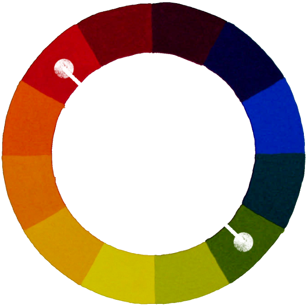
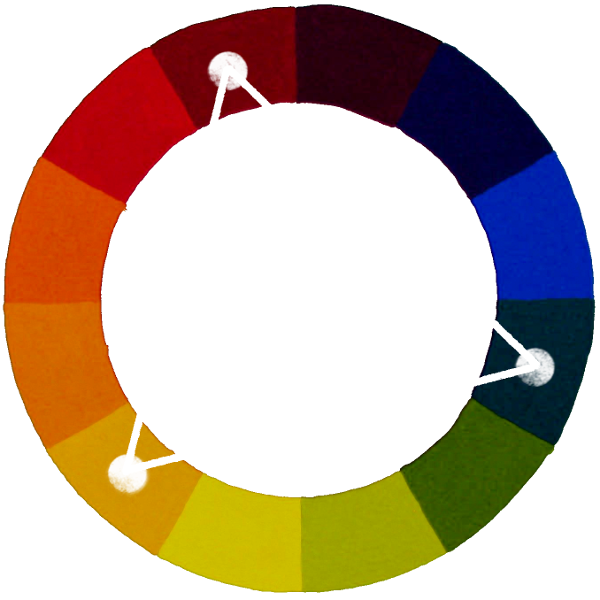

Does it Come In Cornflower Blue?
A brief introduction to color theory
But first...
Are you a designer?
Do you...
- Create things?
- For humans?
- Without a "trained" designer nearby?
Or at the very least...
...you design things that people use.
Color Theory
A body of practical guidance to color mixing and the visual effects of a specific color combination.
Colors...
- Contribute to the usability of an application
- Are related to one another
- Associated with moods
“Warm” Colors
- Red, Orange, Yellow, ...
- Stimulating
- Active
“Cool” Colors
- Blue, Gray, Violet, ...
- Calm
- Passive
Red
Energy. Passion. Intensity.
Yellow
Attention. Light. Intellect.
Blue
Trust. Loyalty. Peace.
Green
Organic. Freshness. Safety.
Orange
Festive. Caution. Radiance.
Violet
Wealth. Darkness. Royalty.
- Hue
- A color used to describe the general family of another color.
- Tint
- Altering the amount of white in a color.
- Shade
- Altering the amount of black in a color.
- Tone
- Altering the amount of gray in a color.
- Base Color
- The color you are basing other color relationships on.
The Color Wheel
Shows the relationship of color hues to one another.
Complementary
Positioned at the opposite point from the base color.

Triadic
3 colors positioned around the color wheel.

Analogous
Colors at neighboring positions around the base.
Monochrome
Shades, tints, and tones of a single color.
Combinations!
- Analogous Complementary
- Split Complementary
- Monochrome With Complementary Accent
Building a Palette:
Step 1: Find a base color.
- Images associated with the design.
- Inspriation from other applications.
- Inspiration from your environment.
- Moods associated with different hues.
- Stuck? Just pick something.
Building a Palette:
Step 2: Use color wheel to find assoicated colors.
- Free tools available online. (Paletton, Kuler...)
- Use patterns we discussed.
- Dial colors in with tints, shades, and tones.
Building a Palette:
Step 3: Apply the palette to your application.
- Check contrasts. Especially around text.
- Go back to step 2 and fine tune your choices.
- Something isn't working? Don't force it.
Building a Palette:
Step 4: Happy? Walk Away.
- Before going back, make a mental image.
- Look at it on other screens.
- Show it around.
Thanks!
Jason Schindler
Senior Software Engineer; OCI